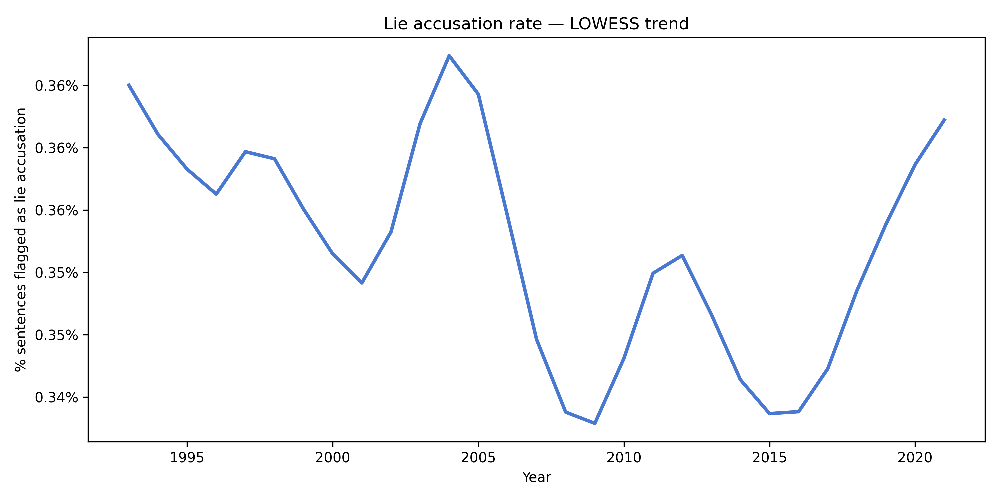
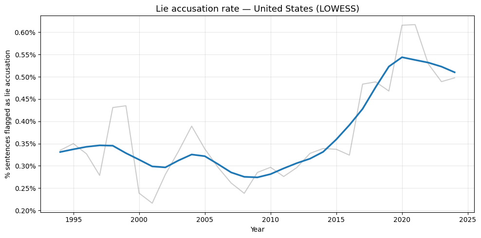

Deception in Democracy: Political Lying Accusations and Their Effects on Democratic Citizenship
DEMO-LIES is an ERC Starting Grant project hosted at the University of Antwerp, led by PI Maurits J. Meijers. The project studies the prevalence, nature, and determinants of political lying accusations in parliamentary debates, and examines how these accusations are perceived by citizens and what their consequences are for democratic attitudes and behaviour.
The project addresses four central questions across four work packages: mapping historical trends in lying accusations (WP1), identifying the political conditions under which accusations are made and by whom (WP2), studying citizen perceptions of lying allegations (WP3), and investigating the consequences for democratic citizenship (WP4).
As postdoctoral researcher on the project, my contribution centres on WP1 and WP2 — building the corpus of accusations and conducting the large-scale comparative analyses. WP3 and WP4 are being led by PhD students Marthe Verdegem and Simon McManus, who will investigate how citizens perceive accusations of political lying and what consequences those accusations carry for democratic trust and political engagement.
Using NLP and text-as-data methods, I am constructing the first large-scale, longitudinal dataset of lying accusations in parliamentary debates across 28 countries.
Integrating corpus data with party- and context-level characteristics to study the political conditions under which accusations are made and by whom.
The WP1 corpus is built by combining six parliamentary datasets, covering 28 countries over a timeline of at least 30 years where available. Across a base corpus of 149 million sentences, the pipeline has so far detected over 500,000 accusations of lying — making this the broadest comparative dataset of political deception in parliamentary speech ever assembled.
These are first results from the WP1 corpus. They remain preliminary and are subject to further validation, but already reveal striking cross-national and longitudinal patterns in the prevalence of lying accusations.

The proportion of sentences flagged as lying accusations across all 28 countries shows a notable spike around 2004, likely linked to debate around the Iraq War, followed by a gradual but steady rise from around 2015 onwards.

The US shows a steeper incline from around 2015, with a sharp peak near 2020–2021. This may reflect rising partisan polarisation in the lead-up to and aftermath of the 2016 election.
Corpus validation — systematic validation of the LieLines classifier output through a collaborative annotation platform, combining manual review with automated quality checks.
Metadata collection on accusers and accused — leveraging the full-stack software and NLP tools developed during my PhD to automatically gather individual-level background data (education, career, party affiliation) on the politicians involved in each accusation.
WP2 analysis — once the corpus and metadata are validated, running the multilevel regression models to study the actor- and context-level determinants of political lying accusations across countries and over time.
Dataset publication — publishing the WP1 corpus as an open-access dataset alongside a methods paper documenting the full pipeline.
Bellens, T. & Meijers, M.J. — Working paper. Methodological appendix available. To be submitted to Political Analysis.
ECPR General Conference 2026 — Wrocław, Poland · Panel: Radicals United? Transnational Strategies of Europe's Radical and Illiberal Right
Accusations of political lying have become ubiquitous in contemporary democratic discourse. Despite widespread claims that we live in an era of 'post-truth' politics, we lack systematic evidence about which political actors are accused of lying and, crucially, who makes these accusations. Existing research has focused on isolated instances of deception or relied on anecdotal evidence, leaving fundamental questions unanswered about the relational dynamics of lying accusations in parliamentary politics.
This paper asks: Which political actors are accused of political lying, and who are the accusers? We adopt a novel relational approach that examines not just targets or sources in isolation, but the dyadic relationships between accusers and the accused. We analyse parliamentary debates from 28 national parliaments using advanced NLP techniques to systematically identify lying accusations over time and across countries.
We integrate insights from research on populism and negative campaigning to advance competing hypotheses. Regarding targets, we expect MPs from populist and governing parties to be disproportionately accused. Regarding sources, we hypothesise that MPs from populist, ideologically extreme, and opposition parties are most likely to make accusations, using them strategically to discredit mainstream "elite" politicians. Our relational approach further tests whether ideological distance and electoral asymmetries between party pairs predict accusation patterns. We employ multilevel regression models on party-year and dyadic party-pair data, incorporating party characteristics from established datasets (V-Party, ParlGov) measuring populism, ideology, governing status, and electoral performance.
By revealing which actors dominate discourses of political deception across a wide range of democratic contexts, this research illuminates how accusations of dishonesty have become embedded in routine parliamentary behaviour — and what this tells us about political polarisation in contemporary democracy.